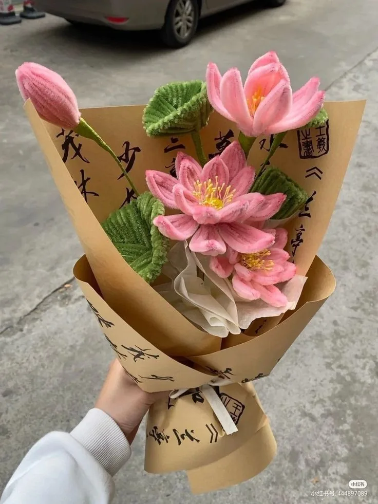
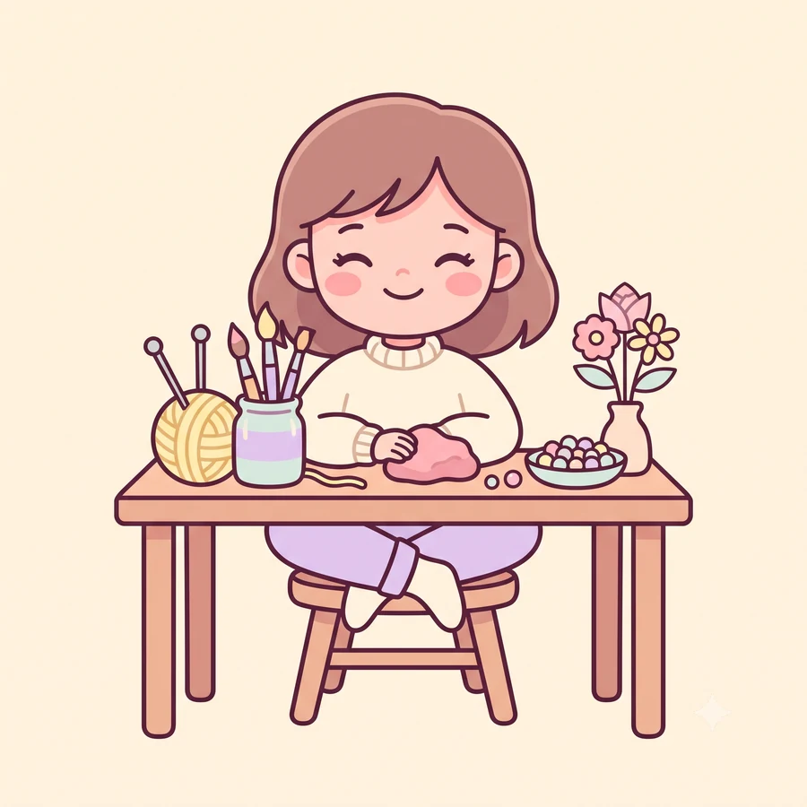
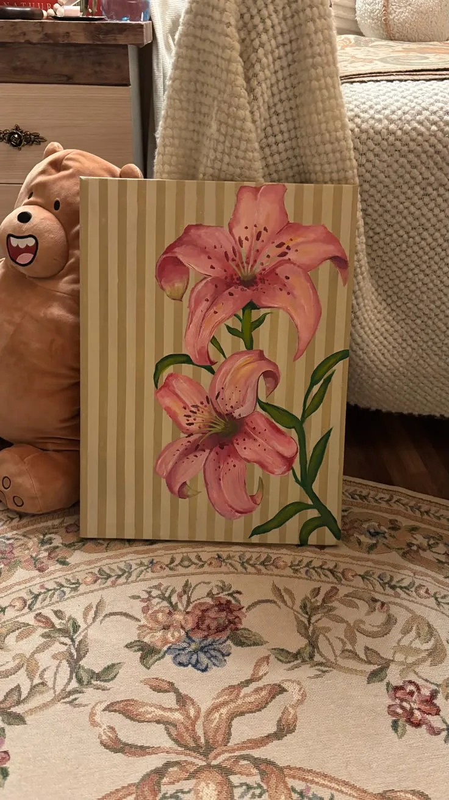
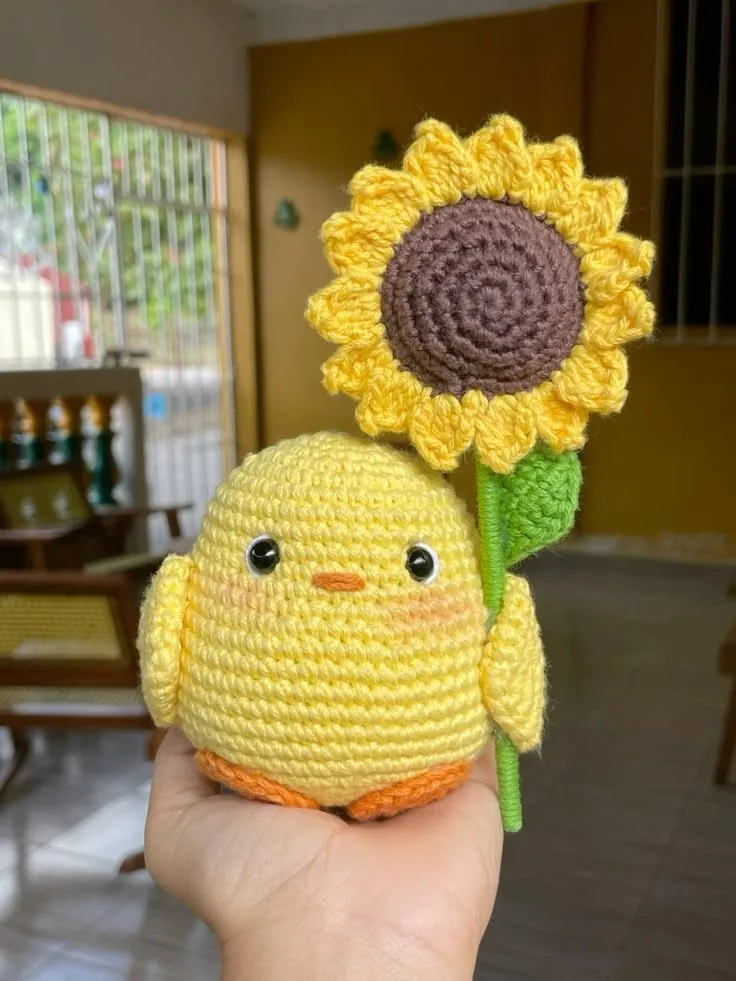
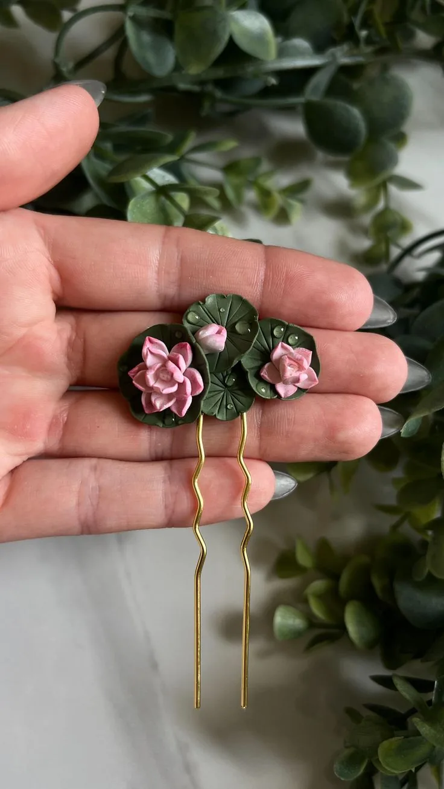

Mission
Keepsakes made for one person
To turn personal ideas and special moments into handmade keepsakes that feel as if they were made for one person, because they were.
About the Studio
Tulip & Twine is a small handmade studio. Here is where it came from, what it cares about, and who is behind every piece.

Tulip & Twine started as a cozy corner desk filled with colorful yarns, clay blocks, paintbrushes and tiny beads. Founded by a maker with a passion for detailed artistic expression, our studio believes that handmade objects carry a quiet warmth that machine-made gifts simply cannot replicate.
Every item crafted in our studio is individually made with patience, creativity and care. No two pieces are ever identical, giving every keychain, painting or crochet stem its own distinct identity.
What began with paintings and crochet has grown, one craft at a time, to include fuzzy wire flowers, clay pieces, beaded keychains and handmade jewellery. The studio is still small on purpose: small batches, made to order, and enough time to get the details right.
Two short promises that decide what we make and how we make it.
Mission
To turn personal ideas and special moments into handmade keepsakes that feel as if they were made for one person, because they were.
Vision
Gifts chosen with thought, objects kept for years, and a studio that always has the time to care about the small details.
Four values sit behind every order, from the first message to the final ribbon.
Every piece is painted, stitched, shaped or beaded by hand. Nothing is mass-produced.
Your colours, names and occasions guide the design, so the result feels like yours.
Small batches and made-to-order work mean nothing is rushed out of the studio.
We say clearly what we can make and how long handmade work takes.
Tulip & Twine is a one-maker studio. Instead of a staff list, here is who does what. It is the same pair of hands at every desk.

Founder & maker
Designs, makes and wraps every order, and answers every message herself.

Paintings & wall decor
Mini gouache canvases, botanical watercolours and pastel acrylic frames start here.

Crochet & fuzzy wire
Amigurumi plushies, yarn bouquets and chenille-stem flowers take shape in this corner.

Clay, beads & jewellery
Trinket dishes, keychains, charms and jewellery are sculpted and strung at this bench.
The maker's portrait is an illustrated avatar, not a photograph. The craft photographs show real handmade pieces.
Tell us the occasion, the colours and the person it is for. We would love to make it.